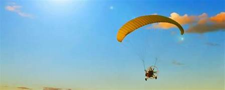

.jpg)
.jpg)
.jpg)
Tourist Places near Jog Falls
Honnemaradu: Adrenaline Junkie’s Dream
Located on the ochre background of the Sharavathi River backwater, Honnemaradu is famous for its water sports. If you fancy, you can spend your day on the water through kayaking, or for the more adventurous one is by attempting windsurfing. The large expanse of the water body provided for other activities such as camping and sleeping in the open, with the sparkling of the stars as the only background music, and the sound of the water to lull you to sleep.
Interactive Tip: Do not leave behind swimwear and a good camera to take beautiful pictures. Most importantly, don’t miss the sun-rise on the reservoir; it is splendid!
Sigandur: The Spiritual Retreat
It takes a little over 30 minutes by car to get to Sigandur, the blessed village of Sigandur Chowdeshwari Temple. Chowdeshwari temple is a place of worship of Goddess Chowdeshwari enveloped by rolling hills and green forestary. Notably, the arduous trip to Sigandur is as inspiring as the final place of pilgrimage since one has to ferry across the Sharavathi River to reach the final destination.
Murudeshwar:
The Coastal Gem Craving some beach time? Visit Murudeshwar, the great place of Shiva statue which is breathtakingly beautiful and placed on the backdrop of the blue water of Arabian Sea. A visit to the Murudeshwar Temple which is beautifully carved out of black stone proves to be an interesting landmark. Enjoy a leisurely walk by the shoreline of the beach after visiting the temple or go for adventurous water sports.